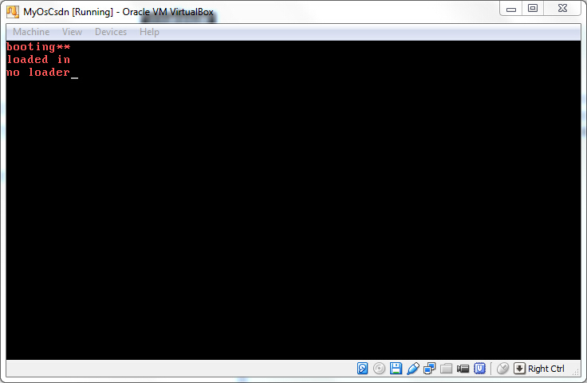

一、说明 只会打印一句话的操作系统，一无所用，我们要给它加一些功能。 打印功能是最必须的，因为当代码没有按照我们的计划运行时，加打印最直观的debug方法 现在的打印还比较麻烦，我们希望先把要打印的字符串存下来，并给每个字符串加个编号，只要给出编号，就可以打印出那句话。
二、效果 
三、代码
.code16 #??16?????
.text #?????
mov %cs, %ax #?????????????????????
mov %ax, %ds
mov %ax, %es
mov {% math_inline %}0, %dh
call DispStr #?????????,call function to display string
mov {% endmath_inline %}1, %dh
call DispStr
mov {% math_inline %}2, %dh
call DispStr
jmp . #while(1),????
DispStr: #???????
mov {% endmath_inline %}MessageLength, %ax
mul %dh
add {% math_inline %}BootMessage, %ax
mov %ax, %bp #ES:BP = address of string
mov %ds, %ax
mov %ax, %es
mov {% endmath_inline %}MessageLength, %cx #CX = length of string
mov {% math_inline %}0x1301, %ax #AH = 13, AL = 01h
mov {% endmath_inline %}0x00c, %bx #page number = BH=0, word color = BL = 0Ch
mov {% math_inline %}0, %dl
int {% endmath_inline %}0x10 #????10h is interrupt number
ret #??
.set MessageLength, 9
BootMessage: .ascii "booting**"
Message1: .ascii "loaded in"
Message2: .ascii "no loader"
.org 510 #fill 0 in first 510 BYTE
.word 0xaa55 #end with 0xaa55
四、代码详解
mov {% math_inline %}0, %dh
call DispStr
在调用DispStr前先给%dh赋值，这个值就是字符串的编号，是要给DispStr使用的参数
mov {% endmath_inline %}MessageLength, %ax
mul %dh
add $BootMessage, %ax
计算字符串的起始地址，为了计算方便，使等每个字符串长度相等， 第i个字符串的起始地址 = 第0个字符串的起始地址 + i * 每个字符串的长度
Message1: .ascii "loaded in"
Message2: .ascii "no loader"
预先存入要打印的字符串，每个字符串长度相同，紧密排列